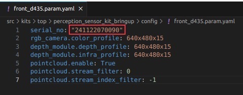
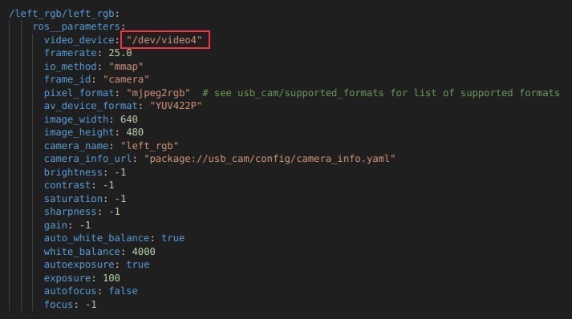
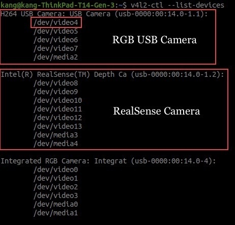

Getting Started
Connecting the Robot PC to your WiFi Network
The devkit is equipped with an Industrial 5G/WiFi Router and can act as an AP client to provide internet connectivity. Review the following guide and configure your router to connect to an existing WiFi network.
Connecting your PC to the Robot PC via SSH
You can control, deploy, launch, and debug applications from your PC. Alternatively, you can develop your applications directly on the robot PC by connecting a display, keyboard, and mouse to the robot PC or use a remote desktop application to access.
Connect to the WiFi broadcasted by the Industrial 5G/WiFi Router in the devkit.
From your PC, open a terminal and run the following command to SSH into the robot PC. Enter the robot PC password when prompted (Refer to the handover note for the login credentials and the IP address of the Robot PC).
ssh <USER>@<ROBOT_PC_IP>
Note
Replace <USER> and <ROBOT_PC_IP> with the values for your robot. For example, ssh wr@10.10.0.20
Camera Configuration
The devkit supports the installation of up to four cameras, which can be mounted at the front, rear, left, and right positions of the Vision Sensor Kit. The supported camera types include RGB USB camera and RealSense D435i. Navigate to the src/kits/top/perception_sensor_kit_bringup/config folder. The configuration files are named according to the camera position and type. For example, the configuration file for the front RealSense D435i camera is named front_d435i.param.yaml. The following folder structure shows
the relevant files for configuring the cameras:
Based on the camera(s) you have installed, open the corresponding configuration file and adjust the parameters as necessary.
RealSense Camera
For example, if you have a RealSense D435i connected at the front position, open the front_d435i.param.yaml file and replace serial_no with the serial number of your RealSense camera. To find the serial number of your RealSense camera(s) connected, enter rs-enumerate-devices -s in the terminal.
{kind=link}

RGB Camera
For example, if you have an RGB USB camera connected and mounted at the left position, open the rgb_camera.yaml file and enter the camera device file with its ID assigned by the kernel.
{kind=link}

To find the device file ID, enter v4l2-ctl --list-devices in the terminal. If v4l-utils package is not installed, run sudo apt-get install v4l-utils to install it.
{kind=link}
